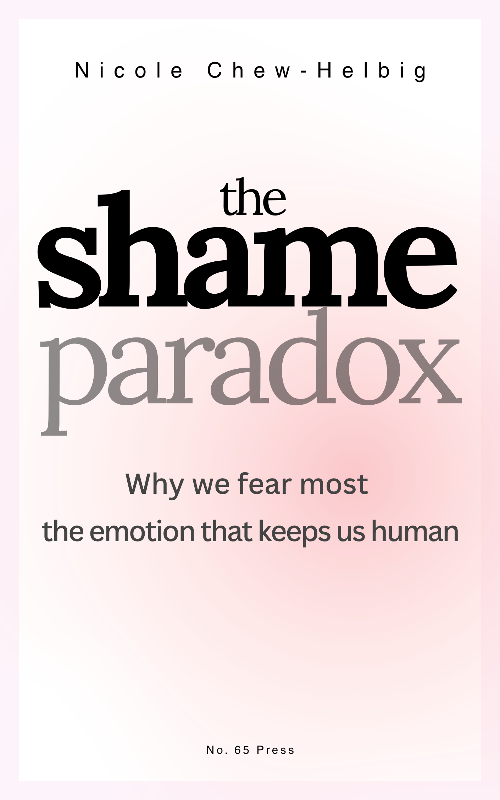

Why We Fear Most the Emotion That Keeps Us Human
Ebook out 3 October 2026 — Pre-order now
No. 65 Press · Singapore · 2026
Through neuroscience, a startling reinterpretation of Genesis, and three clinical stories that stay with you long after reading, this book traces shame from infant neurobiology to its place in consciousness itself — arguing that the emotion we spend our lives fleeing is the one that makes us irreplaceably human.
Shame marks us as fundamentally relational beings. Unlike guilt, which concerns what we've done, shame strikes at who we are — our very belonging in the human community. Yet because shame hurts so acutely, we develop elaborate defences against feeling it. Fear of shame paralyses us; dissociation from shame drives addictions and perpetual conflict. We do almost anything to avoid the unbearable feeling that we don't belong.
This is shame's paradox: the very emotion that confirms our need for others becomes what drives us into isolation.
“What makes humans irreplaceable to each other, even in an age of artificial intelligence?”
The Shame Paradox moves between clinical practice, neuroscience, philosophy, and memoir — drawn to the questions that sit at the edge of what psychotherapy can articulate. Where shame meets consciousness. Where relationship meets moral life. Where the body knows what words cannot yet say.
The preface, the introduction and the first chapter, “Before We Knew We Were Naked”. Free to read here or to download.
“Compelling, courageous and deeply absorbing. Moving seamlessly between clinical storytelling, research and theory, this book does more than illuminate shame, it brings us into contact with our own. It reveals how deeply shame is woven through our relationships, shaping how we see ourselves, one another and the worlds we create together. Powerful in its exploration of the shame carried by victims, perpetrators and bystanders alike, it challenges us to examine not only individual behaviour, but the wider relational and social forces in which shame takes root. An important and deeply affecting book.”
The ebook arrives on 3 October 2026 and can be pre-ordered now. The paperback follows on 24 October.
Published by No. 65 Press, Singapore
ISBN 978-981-94-6933-8 (paperback) · 978-981-94-6934-5 (hardback)